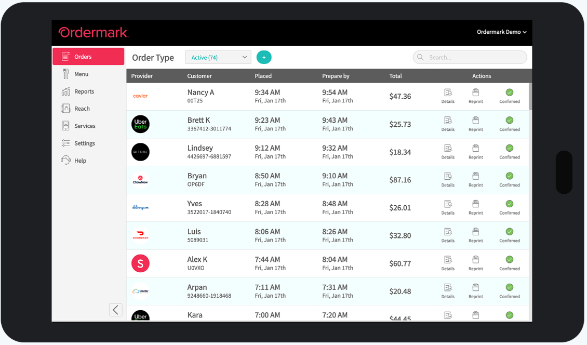

Ordermark

Position: Client Specialist Intern
Role description and responsibilities:
- Utilized Salesforce and various communication forms to interact with
the tech startup’s clients, and handle the increased number of concerns
resulting from the COVID-19 quarantine shutdowns
- Collaborated with coworkers ranging from interns to department heads
to identify which internal tools generated the greatest lag in the daily tasks of
the customer support team and the online menu editing team
- Designed creative new tools and features to effectively solve problems highlighted by
coworker interviews and created a presentation detailing the benefits of such tools for
the reference of the head of product design